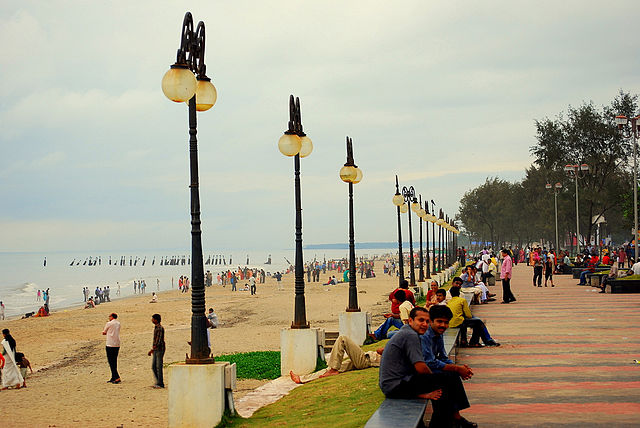
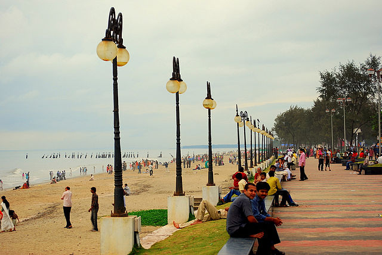
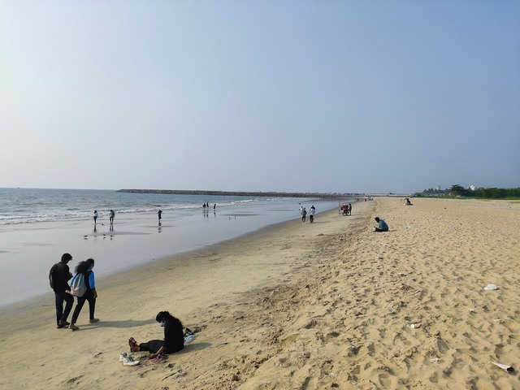
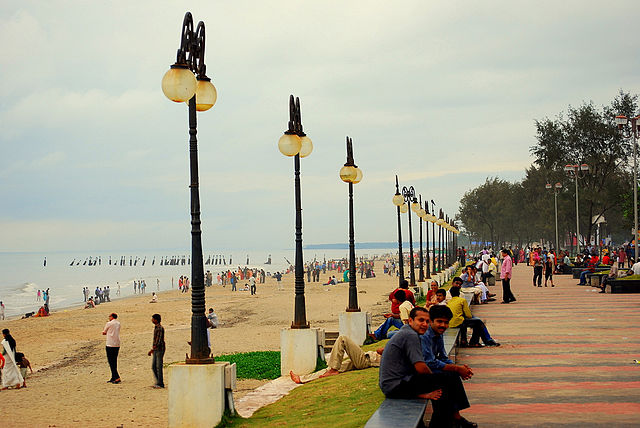

Kozhikode Beach or Calicut Beach is a beach on the western side of Kozhikode, situated on the Malabar Coast of India. The beach is accessible through four road overbridges in the city. The beach has paved stones and illumination. There is one Lions Park for the children and an aquarium. Kozhikode beach has always been a prominent place for conducting public meetings. The beach road was renamed 'Gandhi Road' in 1934 after Gandhi visited Calicut in 1934.100 years ago Valiyangadi and the beach area were the centre of Kozhikode city. In the 1970s the downtown shifted to Mananchira area and again, in the 1980s, Mavoor Road became the centre of attraction. In 2010s, Thondayad Bypass area and Palazhi on the Airport road has emerged as the new city centre with a vibrant night life.
